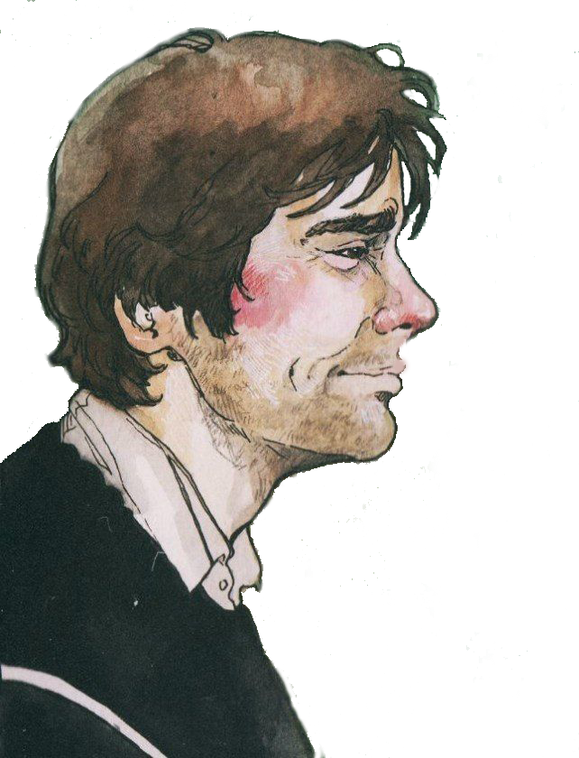
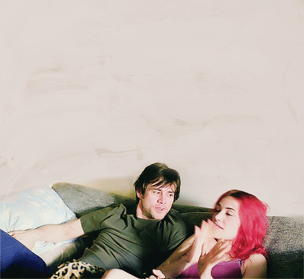

Joel is a shabby but still dreamy middle-aged youth. On Valentine's Day, he learns that his beloved Clementine has decided to erase him from her memory. The pages have been torn out - I don’t remember that I did it ”- these are the words that open this story of unconsciousness. Screenwriter Charlie Kaufman brings the worn-out dramatic move with unconsciousness to a wonderful tautology: double amnesia - not only did he rip out the pages from his diary, but he also forgot about it. Philip Dick's sci-fi assumption - a machine that can remove unnecessary sentiment from the head - becomes the driving force behind the most tender love story that the 2000s have been capable of. A man came home, drank sleeping pills and prepared to erase.
In his subconscious, Joel actively resists the erasure of memories, which, like in a movie, scroll one after another in his head, causing nostalgia and sadness. Joel goes through one after another romantic dates with Clementine, who in his subconscious mind actively helps him to fight erasure, she haunts him in his memories and even encourages him to some tricks. In the meantime, the process of erasing memories is going on, from the dialogue between Patrick and Stan it becomes clear that Patrick, with whom Clementine spoke in the store, when Joel came there, is one of the technicians - when he performed the same erasing procedure on Clementine, he "fell in love" with her ...

starring
Клементина
Джоел
Кейт Уинслет

Джим Керри